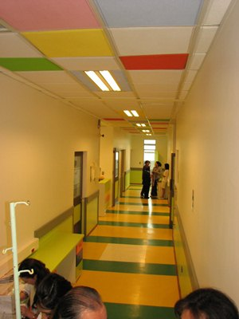
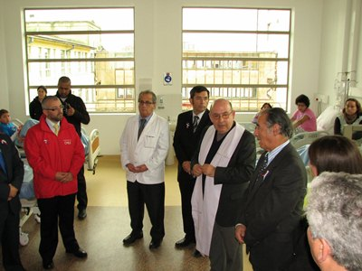

El Hospital Guillermo Gran Benavente se inauguró en 1944, después del gran terremoto de 1939. Atiende a los pacientes de la 8ª Región recibiendo unos 60 a 70 pacientes con cáncer o leucemia nuevos por año, lo que es comparable con los grandes hospitales pediátricos de Santiago. En estos 67 años la medicina ha cambiado, los tipos de pacientes han cambiado y las instalaciones se han ido haciendo obsoletas y poco acogedoras. En el año 1944 nadie pensaba que un niño con cáncer se podía curar, hoy se cura el 70 a 80%.
A la Fundación Niño y Cáncer se nos pidió a fines del año pasado una ayuda para comprar cortinas para la Unidad De Oncología Pediátrica de Concepción. En una visita en terreno nos dimos cuenta que las necesidades de esa Unidad eran mucho mayores y ofrecimos hacer una remodelación completa como la que ahora podemos ver. Los trabajos se iniciaron en Enero 2011 y terminaron el 02 Mayo 2011 y fueron ejecutados en forma eficiente y con un gran compromiso y cariño por Eduardo Vivallos y su Empresa Constructora. La Fundación Niño y Cáncer aportó todos los recursos económicos que fueron alrededor de 170 millones de pesos y también algunas ideas sobre distribución infraestructura y mejor aprovechamiento de los espacios.

¿Tiene usted alguna pregunta? Por favor, no dude en contactarnos directamente.